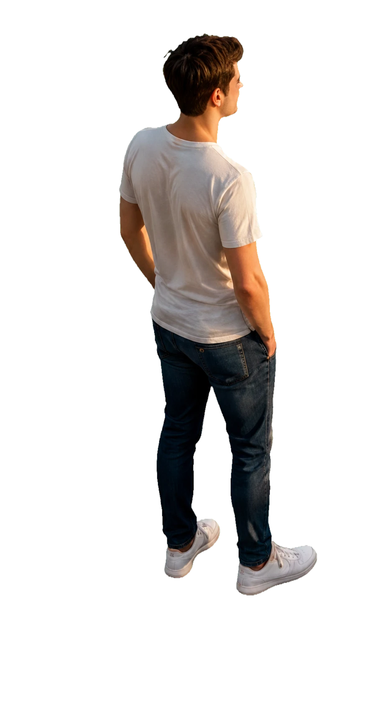
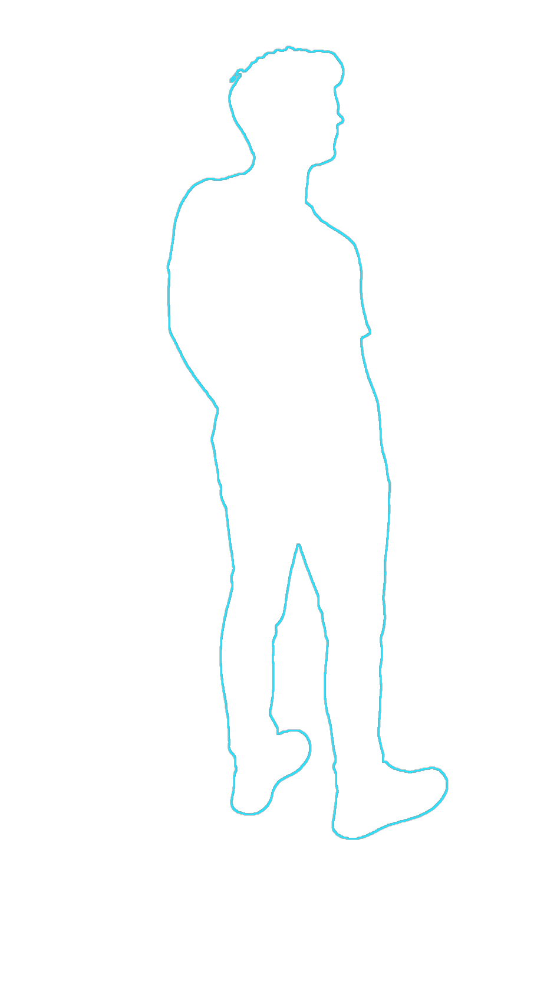
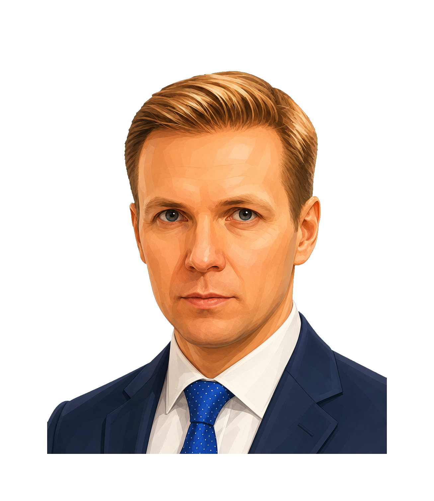
МИССИЯ 3
ЗАЩИТА БИЗНЕСА
ФПСП — социальный бизнес
От идеи до масштабирования: обучение, акселерация, краудфандинг, упаковка в социальную франшизу.
Университет СП · Акселератор 4.0 · Школа краудфандинга
Штаб — защита бизнеса
Возникла проблема на пути — Штаб защитит: обращения, барьеры, системные вопросы.
500+ обращений в год · решение за 15 дней · 120+ объединений
Бизнес открыт и работает
Путь пройден вместе: от идеи до своего дела. Город и бизнес — на одной волне.
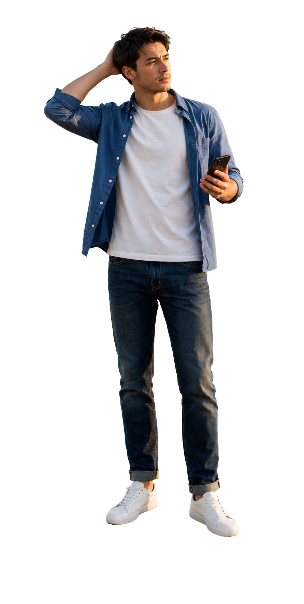
★★★★★
Полный комплекс нефинансовых услуг для бизнеса
- поиск идеи
- регистрация бизнеса
- масштабирование
- Консультации — 46 тыс. консультаций с начала года
- Обучающие и деловые мероприятия — >32 тыс. получателей образовательной поддержки с начала года
- Электронные услуги и сервисы — >29 тыс. обращений к онлайн-сервисам с начала года
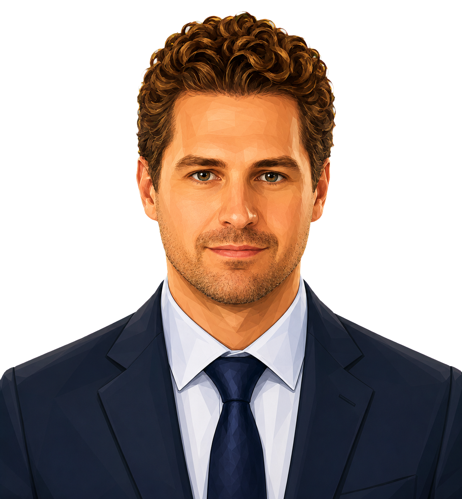
МИССИЯ 1
НАЧАТЬ БИЗНЕС
ВНИМАНИЕ, КВИЗ!
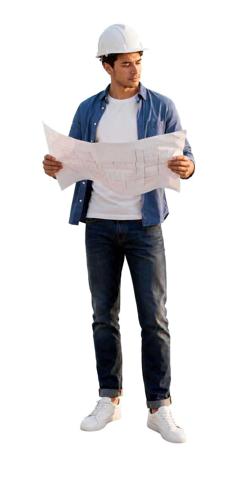
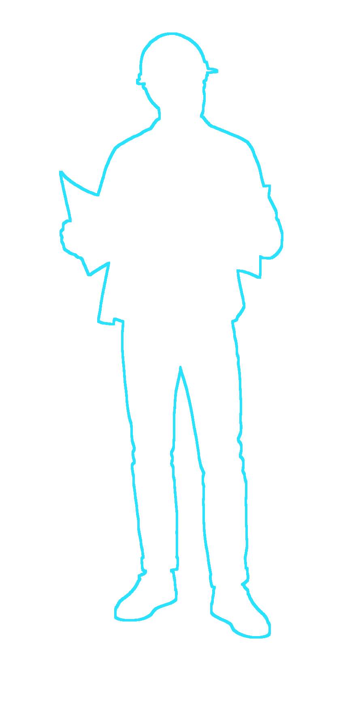
★★★★★
Единый консультационный центр
- >400 тематик от 25 ОИВ г.Москвы
- >85% услуг оказывается в электронном виде
- Предприниматель может получить консультации по всем вопросам в режиме «одно окно»
- >25 услуг оказывается в автоматизированном режиме (ИИ)
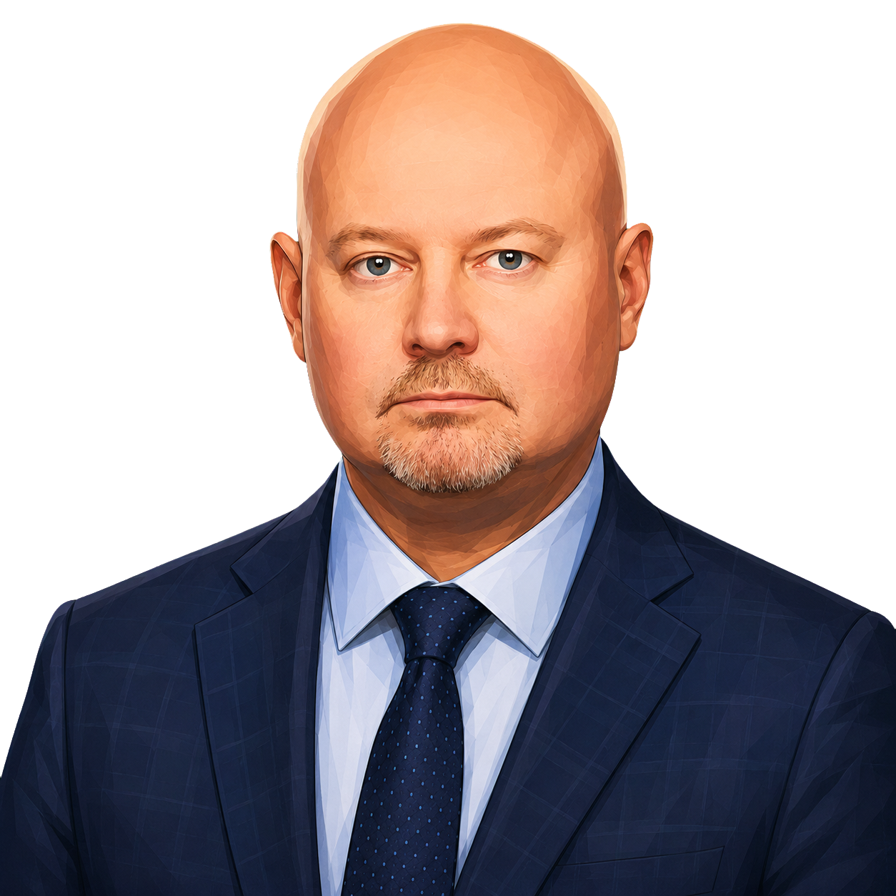
ФСК
★★★★★
ФСК — финансирование бизнеса
- Поручительство, когда не хватает залога
- Кредитный брокеридж, оценка, льготное кредитование
- 5 гарантийных продуктов · 438 млрд ₽ привлечено
МИССИЯ 2
НАЙТИ ДЕНЬГИ
ОТКРЫТИЕ КАФЕ
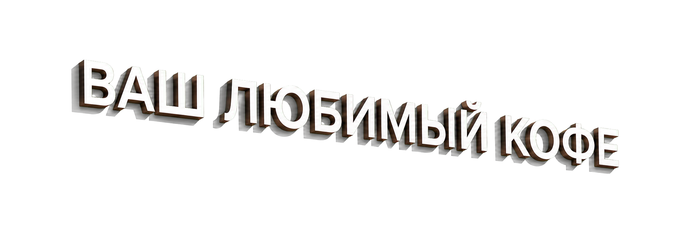
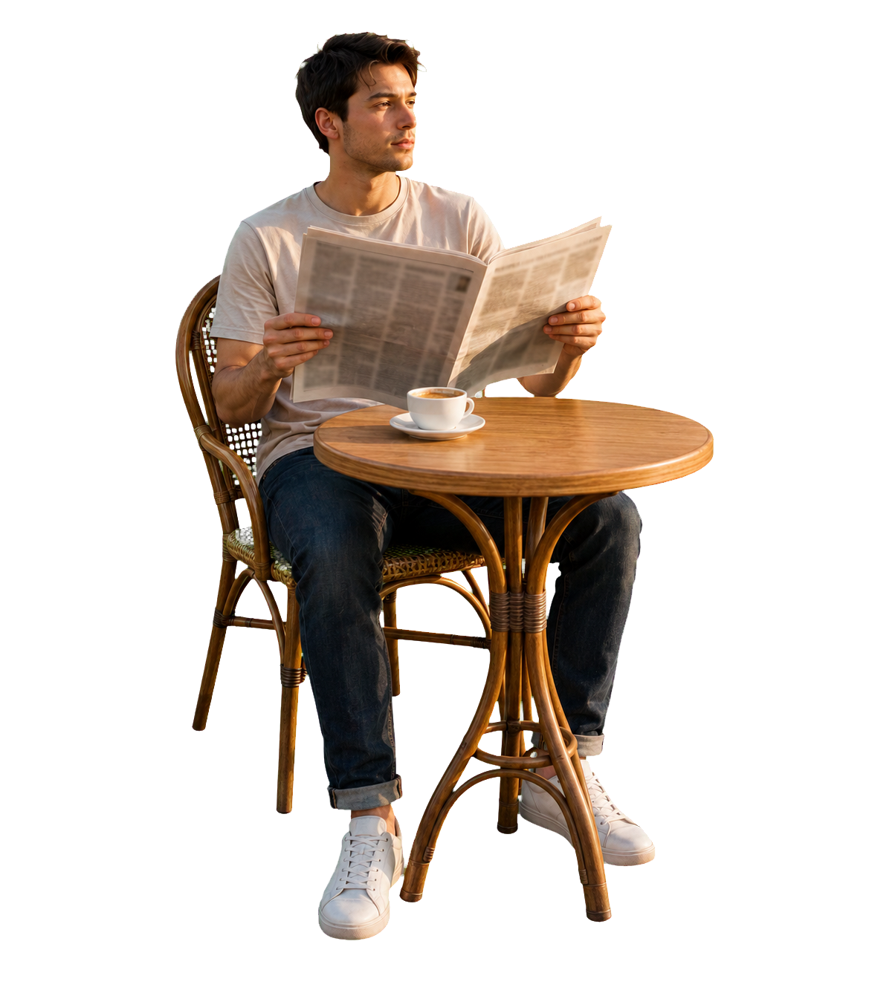
★★★★★
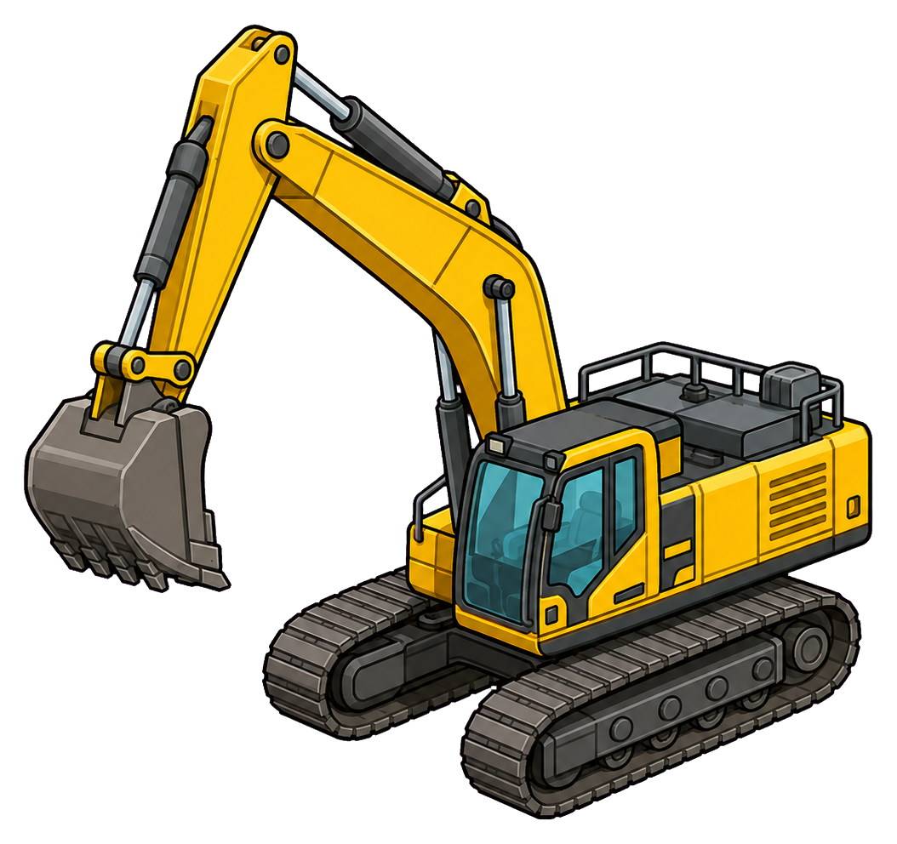
МИССИЯ 3
ЗАЩИТА БИЗНЕСА
Больше чем бизнес
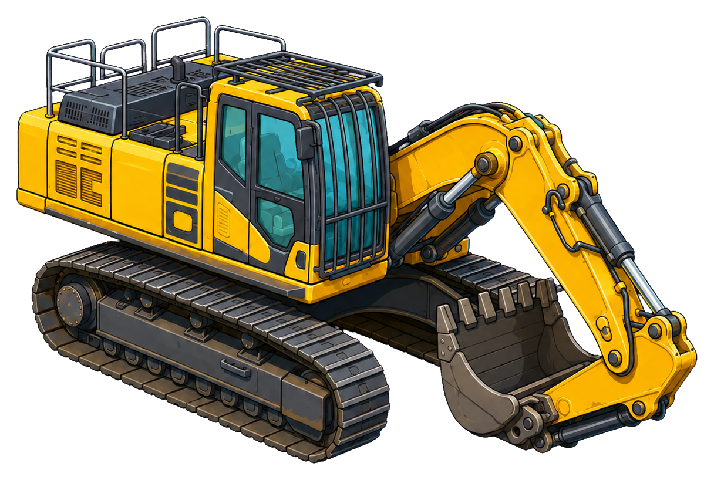
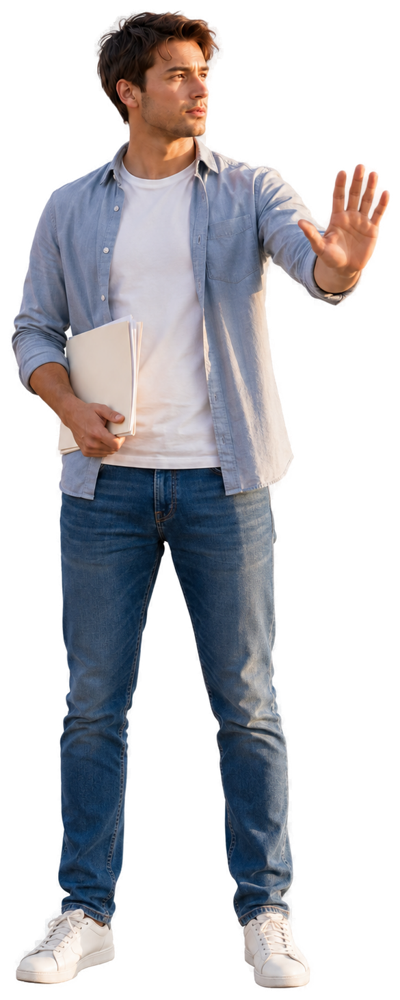
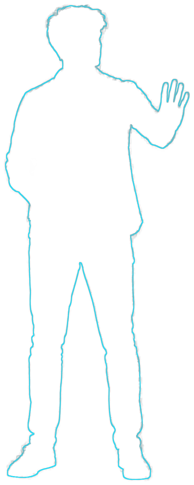
★★★★★
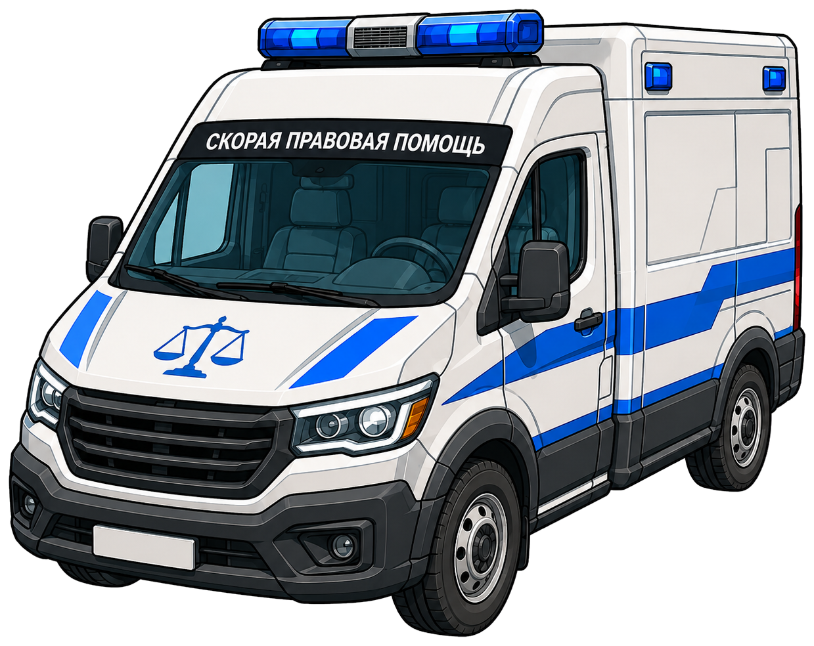